| time | saw | phase | planner | actions (with human reaction time) | notes | cost |
|---|
0:02.0
turn 1 |  |
tutorial
decider: tutorial 97%
clarity 98% |
sees: Tutorial: blue car in middle lane, 'Swipe to switch lanes!' with pink block ahead
progress: first turn |
0:03.6 swipe swipe left to switch lanes and dodge pink block (+1643 ms) |
3-lane synthwave runner. Swipe left/right to switch lanes. Dodge pink blocks, collect yellow coins. | 3.0s
$0.0061 |
0:04.5
turn 2 | 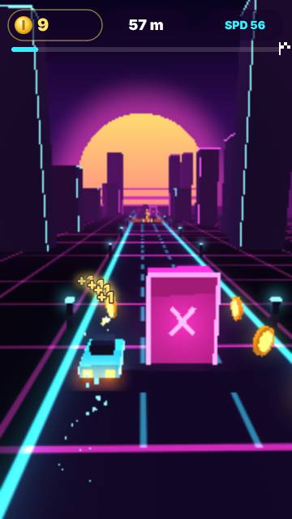 |
gameplay
decider: gameplay 63%
clarity 67%
last input worked: 89% |
sees: 3-lane synthwave runner, car in left lane, pink block in middle lane, coins on right
progress: Swiped left, dodged pink block, collected coins (9 coins, 57m)
reflex policy (zone 450,200,750,800) · following the player from [700,350] : dodge_left — a pink block is directly ahead of the player and the lane to the player's left is empty; dodge_right — a pink block is directly ahead of the player and the player is in the leftmost lane or the left lane is blocked; collect_left (pickup) — yellow coins are in the lane to the player's left with no pink block there and no pink block ahead; collect_right (pickup) — yellow coins are in the lane to the player's right with no pink block there and no pink block ahead
→ 17 checks, fired 2 (dodge_left×1, dodge_right×1), ended by duration |
0:04.8 swipe reflex dodge_left (late): a pink block is directly ahead of the player and the lane to the player's left is empty (+309 ms) 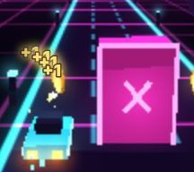
0:06.8 swipe reflex dodge_right: a pink block is directly ahead of the player and the player is in the leftmost lane or the (+255 ms) 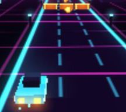 |
3-lane synthwave runner. Swipe left/right to switch lanes. Dodge pink blocks, collect yellow coins. Using react for fast dodging. | 5.3s
$0.0093 |
0:07.5
turn 3 |  |
tutorial
decider: tutorial 93%
clarity 96%
last input worked: 84% |
sees: Tutorial prompt: Swipe UP to jump! ahead of an orange barrier spanning all 3 lanes
progress: Dodged pink blocks and collected 10 coins, reached 104 m |
0:08.7 swipe swipe up to jump over the orange barrier as instructed by the tutorial (+1202 ms) |
3-lane synthwave runner. Swipe left/right to switch lanes. Swipe up to jump over orange barriers. Dodge pink blocks, collect yellow coins. | 3.4s
$0.0062 |
0:09.5
turn 4 | 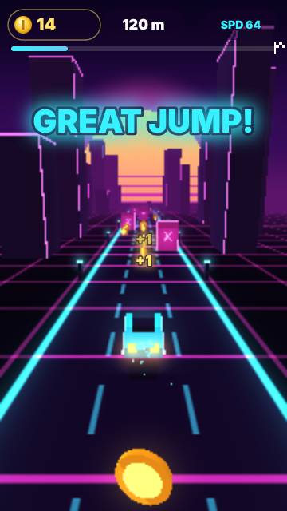 |
gameplay
decider: gameplay 74%
clarity 82%
last input worked: 100% |
sees: 3-lane synthwave runner, 'GREAT JUMP!' banner, car in middle lane, coins ahead
progress: Jumped over the orange barrier successfully, now at 120m
reflex policy (zone 430,350,720,650) · following the player from [650,500] : jump_barrier — an orange barrier is directly ahead of the player; dodge_left — a pink block is directly ahead of the player and the lane to the player's left is empty; dodge_right — a pink block is directly ahead of the player and the lane to the player's right is empty
→ 7 checks, fired 5 (dodge_left×2, dodge_right×3), ended by hit
⚡ 0:13.1 hit (freeze, p=0.99) — the reflex fired only 0.13 s before the hit: seen too late → zone deeper (0 → 44) |
0:09.8 swipe reflex dodge_left: a pink block is directly ahead of the player and the lane to the player's left is empty (+236 ms) 
0:10.7 swipe reflex dodge_left: a pink block is directly ahead of the player and the lane to the player's left is empty (+247 ms) 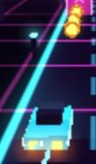
0:11.4 swipe reflex dodge_right (other way: wall): a pink block is directly ahead of the player and the lane to the player's right is empty (+230 ms) 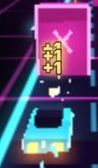
0:12.2 swipe reflex dodge_right: a pink block is directly ahead of the player and the lane to the player's right is empty (+253 ms) 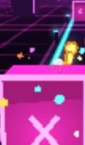
0:12.9 swipe reflex dodge_right (late) (other way: wall): a pink block is directly ahead of the player and the lane to the player's right is empty (+310 ms) 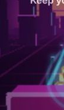 |
3-lane synthwave runner. Swipe left/right to switch lanes. Swipe up to jump over orange barriers. Dodge pink blocks, collect yellow coins. | 6.4s
$0.0096 |
0:13.4
turn 5 | |
fail
decider: fail 97%
clarity 88%
last input worked: 8% |
sees: Crashed popup with free Revive button and No thanks button
progress: Reflexes dodged 5 blocks but hit 1 late |
0:14.7 tap “Revive and continue” tap the free Revive button to continue the run (+1303 ms) |
3-lane synthwave runner. Swipe left/right to switch lanes. Swipe up to jump over orange barriers. Dodge pink blocks, collect yellow coins. Reviving now. | 3.0s
$0.0064 |
0:15.4
turn 6 |  |
gameplay
decider: gameplay 81%
clarity 86%
last input worked: 100% |
sees: Revived in 3-lane synthwave runner, 162m, SPD 54, coins ahead
progress: Revive worked, back in the run
reflex policy (zone 520,200,820,800) · following the player from [750,350] 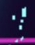 : dodge_left — a pink block is directly ahead of the player and the lane to the player's left is empty; dodge_right — a pink block is directly ahead of the player and the lane to the player's right is empty; jump_barrier — an orange barrier is directly ahead of the player; collect_coin_left (pickup) — yellow coins are in the lane to the player's left and no pink block is there; collect_coin_right (pickup) — yellow coins are in the lane to the player's right and no pink block is there
zone depth learned so far: +44/1000 beyond the drawn far edge (watching 476,200,820,800)
→ 12 checks, fired 6 (collect_coin_right×1, collect_coin_left×4, jump_barrier×1), ended by duration |
0:15.6 swipe reflex collect_coin_right: yellow coins are in the lane to the player's right and no pink block is there (+212 ms) 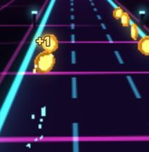
0:16.7 swipe reflex collect_coin_left: yellow coins are in the lane to the player's left and no pink block is there (+226 ms) 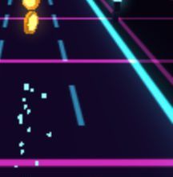
0:17.6 swipe reflex jump_barrier (other way: wall): an orange barrier is directly ahead of the player (+287 ms) 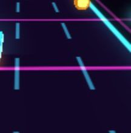
0:18.2 swipe reflex collect_coin_left: yellow coins are in the lane to the player's left and no pink block is there (+194 ms) 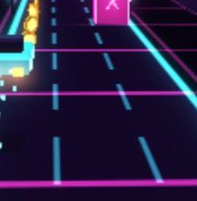
0:18.9 swipe reflex collect_coin_left: yellow coins are in the lane to the player's left and no pink block is there (+200 ms) 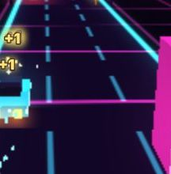
0:19.6 swipe reflex collect_coin_left: yellow coins are in the lane to the player's left and no pink block is there (+248 ms) 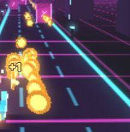 |
3-lane synthwave runner. Swipe left/right to switch lanes, swipe up to jump over orange barriers. Dodge pink blocks, collect yellow coins. | 7.0s
$0.0106 |
0:20.0
turn 7 |  |
gameplay
decider: gameplay 76%
clarity 80%
last input worked: 99% |
sees: 3-lane synthwave runner with MAGNET active, 48 coins, 258m
progress: Collected many coins, activated Magnet power-up
reflex policy (zone 420,150,760,850) · following the player from [695,360] : dodge_right — a pink block with an X is directly ahead of the player and the lane to the player's right is clear; dodge_left — a pink block with an X is directly ahead of the player and the lane to the player's left is clear; jump_barrier — an orange barrier is directly ahead of the player
zone depth learned so far: +44/1000 beyond the drawn far edge (watching 325,150,760,850)
→ 10 checks, fired 6 (dodge_left×1, dodge_right×3, jump_barrier×2), ended by interrupted
⚡ 0:23.4 hit (look, dated by freeze, p=1) 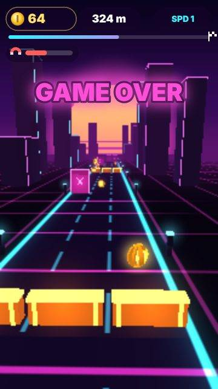 — the reflex fired only 0.10 s before the hit: seen too late → zone deeper (44 → 95) |
0:20.3 swipe reflex dodge_left: a pink block with an X is directly ahead of the player and the lane to the player's left i (+297 ms) 
0:21.0 swipe reflex dodge_right: a pink block with an X is directly ahead of the player and the lane to the player's right (+163 ms) 
0:21.6 swipe reflex dodge_right: a pink block with an X is directly ahead of the player and the lane to the player's right (+150 ms) 
0:22.6 swipe reflex dodge_right: a pink block with an X is directly ahead of the player and the lane to the player's right (+252 ms) 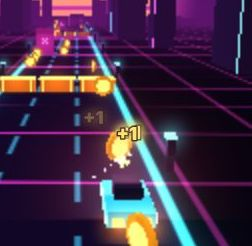
0:23.3 swipe reflex jump_barrier (other way: wall): an orange barrier is directly ahead of the player (+201 ms) 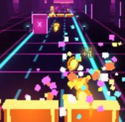
0:24.0 swipe reflex jump_barrier: an orange barrier is directly ahead of the player (+217 ms) 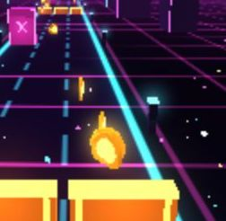 |
3-lane synthwave runner. Swipe left/right to switch lanes, swipe up to jump over orange barriers. Dodge pink blocks, collect yellow coins. Magnet active for ~8s. | 6.0s
$0.0095 |
0:24.5
turn 8 |  |
fail
decider: fail 97%
clarity 38%
last input worked: 26% |
sees: GAME OVER screen
progress: Hit an orange barrier at 324m, game over |
0:24.5 wait wait for retry or end card |
3-lane synthwave runner. Swipe left/right to switch lanes, swipe up to jump over orange barriers. Dodge pink blocks, collect yellow coins. Need deeper zone for jump_barrier. | 3.1s
$0.0059 |
0:26.9
turn 9 | 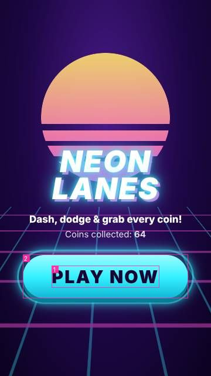 |
end_card
decider: title 59%
clarity 95%
last input worked: 92% |
sees: End card showing Neon Lanes, 64 coins collected, and PLAY NOW button
progress: Reached end card after finishing the run |
0:29.9 tap “Play now” tap PLAY NOW button on end card (+558 ms) |
3-lane synthwave runner. Swipe left/right to switch lanes, swipe up to jump over orange barriers. Dodge pink blocks, collect yellow coins. Reached end card with 64 coins. | 3.5s
$0.0062 |